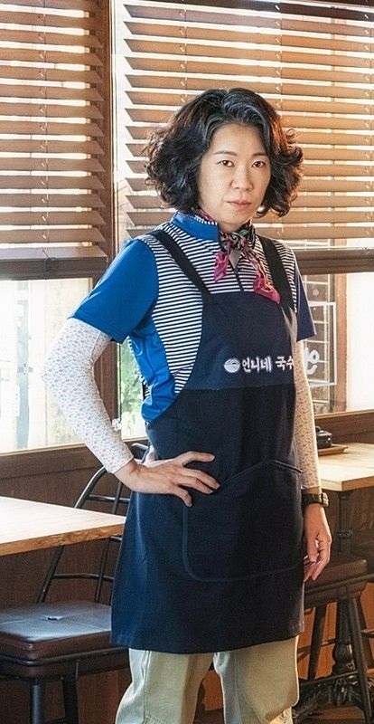

Cô là một thành viên của đội Bộ đếm và là đầu bếp tại Quán Mì của Chị. Mae-ok từng điều hành một studio nhiếp ảnh để kiếm sống. Cô trở thành Counter khi bị chiếm hữu bởi Su-ho, đồng đội Yung của cô. Là một Counter, cô sở hữu khả năng chữa bệnh và là cố vấn cho Counters và là mẹ của Su-ho. Cô ấy toát lên một tính cách điềm đạm quan tâm và tích cực trái ngược với Mo-tak và Ha-na.
